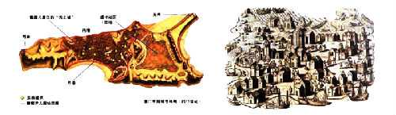
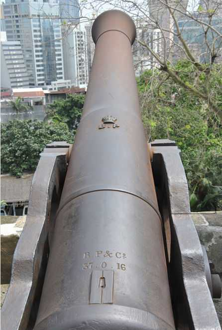
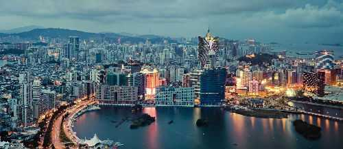
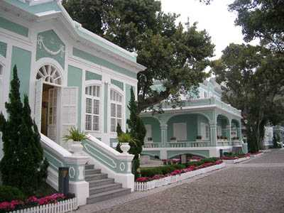
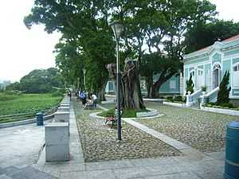

澳门（葡萄牙语：Macau），简称澳，通称濠江丶赌城丶梳打埠，或作海镜丶镜海，是中华人民共和国的两个特别行政区之一，也是世界第一赌城。其位於南中国海北岸，地处珠江口以西，东面与香港相距63公里。澳门全境由澳门半岛丶氹仔丶路环以及路氹城四大部份（区域）所组成：澳门半岛是澳门发展的核心，其东北面一小部份陆地与中国大陆连接；氹仔和路环本是两个分离的离岛，但现已透过填海工程相连起来，而填海後的新生地建设成为路氹城。澳门亦是世界上人口密度最高的地区，每平方公里人口达二万。

澳门自秦朝起成为中国领土，成为华夏民族一部份，从明朝1557年开始被葡萄牙人租借。直至1887年，葡萄牙政府与清朝政府签订了有效期为40年的《中葡和好通商条约》（至1928年期满失效）後，澳门成为葡萄牙“永居管理”之地[18]，也是欧洲国家在东亚的第一块领地。

1980年代，中葡两国共同探讨澳门前途问题，其後於1987年正式签了《中葡联合声明》。根据《声明》，葡萄牙於1999年12月20日结束了对澳门的统治，澳门主权移交中国，澳门实行一国两制，澳门人可享有“高度自治丶澳人治澳”的权利。在“一国两制”政策的指引下，澳门实行高度自治，享有行政管理权丶立法权丶独立的司法权和终审权，而澳门的社会和经济方面的特色会予以保留并得以延续。

十六世纪中叶，第一批葡萄牙人抵澳时，询问居民当地的名称，居民误以为指庙宇，答称“妈阁”。葡萄牙人以其音而译成“MACAU”，成为澳门葡文名称的由来。在後来的四百多年时间里，东西文化一直在此地相互交融，留下了许多历史文化遗产，使澳门成为一个独特的城市。
 
澳门的面积很小，是世界上人口最稠密的地方之一，也是亚洲人均收入比较高的地区。
澳门是一个国际化的都市，几百年来，一直是中西文化融和共存的地方。